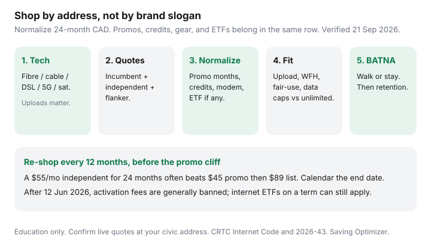

Internet · Canada
How to Compare Canadian ISPs by Address: A Repeatable Three-Quote Method
Canadian internet shopping fails at the civic address. People screenshot a national “$45 gigabit” tile, compare it to a neighbour’s fibre upload, and then stay on list price when the six-month credit dies. The repeatable fix is not a ranking of brands. It is a three-quote sheet at your unit number, normalized over 24 months, with technology, equipment, and early cancellation fees in the same row.
This is the method the rest of the Internet hub assumes. Use it before a Rogers winback, before you pick TekSavvy vs Oxio, and before you treat a Québec Fizz vs Videotron choice as a national roundup. Rural households start with the same sheet, then add the Starlink vs fibre/WISP fork. Eligible families and seniors should check Connecting Families before they shop retail at all.
Disclosure: This guide is education, not an ISP partnership, rate quote, or legal advice. Saving Optimizer does not sell internet plans. Where gear is mentioned elsewhere in this hub (modems, routers, mesh, ethernet), those are offer types we may later affiliate; we do not currently claim hardware or ISP partnerships. Confirm every dollar on the provider’s address tool and in a confirmation email.
Key takeaways
- Shop the address, then the technology (fibre vs cable vs DSL vs 5G/fixed wireless vs satellite). Uploads and congestion are not a download-Mbps story.
- Collect three live quotes: incumbent, independent reseller, flanker. Write “n/a” if a lane does not exist. Do not invent a fourth national “best cheap internet.”
- Normalize promo months, bill credits, equipment, install, and ETF into one 24-month CAD total before tax, then add your provincial tax.
- Check upload, fair-use, and data against how the household actually uses the line — WFH, 4K, cloud backup — not the marketing device count.
- Pick a BATNA (best alternative to a negotiated agreement) before you call retention. Re-shop every 12 months, before the promo cliff.
Step 1: technology available (fibre, cable, DSL, 5G, satellite)
Open the incumbent and reseller address checkers with the same unit number. You are sorting what can physically land, not who has the prettiest tile.
| Label | What it usually is | What to write on the sheet |
|---|---|---|
| Fibre / Fibe / PureFibre / FTTH | Glass to the suite or the building. Uploads often match or approach downloads. | Down / up Mbps; GPON vs XGS; who owns the ONT |
| Cable / Ignite / Helix / DOCSIS | Coax last mile (Rogers, Shaw-legacy, Videotron, Cogeco, Eastlink). Downloads can be fast; uploads are often a fraction. | Down / up; DOCSIS 3.0 vs 3.1 / 4.0 if stated |
| DSL / FTTN | Copper from a cabinet. Speed falls with loop length. Still common in older suburbs and some rural plant. | Do not compare a 50/10 DSL to a 500/20 cable as “the same internet” |
| 5G / LTE home internet | Wireless last mile. Fine as a stopgap; congestion and indoor signal vary by tower and walls. | Priority vs deprioritized data; indoor vs outdoor antenna |
| Satellite (LEO or GEO) | Starlink-class low-earth orbit vs older geostationary. Latency and weather matter. | Hardware offer, monthly CAD at the postal code, clear sky view |
If Bell Fibe is at the door and Rogers is cable, you are not picking a logo. You are picking uploads, install, and a price path. If only one technology exists, the three-quote method still runs — it just runs on one plant with different retail terms.
Step 2: collect Big-3 (or regional incumbent) + one independent + one flanker quote
Do this in one sitting so the promos are from the same week.
- Incumbent. Ontario/Atlantic: Bell and/or Rogers (or Eastlink). Québec: Videotron and Bell. West: Telus and Rogers/Shaw-legacy. Use the official plan page after the address check — Rogers public cards on 21 Sep 2026 showed Starter 150 at $75/mo on a 24-month term ( $110 without time-limited savings and Auto-Pay), Popular 500 at $90 ($130 without), Premier 2 Gig at $100 ($160 without), plus online credits that change. Those are not your winback.
- Independent / TPIA reseller. TekSavvy, Oxio, Start.ca, Distributel, and similar. They often ride the same Rogers, Cogeco, Videotron, or Bell last mile. Coverage is address-specific. Oxio’s own site (used 21 Sep 2026) sells no-term, “no price hikes,” equipment included, and a 60-day guarantee — still only where their leased plant exists.
- Flanker. Fizz on Videotron plant in Québec; Ebox in some Bell footprints; other digital brands. Same coaxial or fibre, different support and bill math. Skip this row if nobody serves the address.
Paste each offer into a row the same day. Screenshot the address-qualified page. If a chat agent quotes a number that is not on the page, it does not exist until it is in email.

Step 3: normalize promo months, credits, equipment, and ETF
A $39 first year that becomes $75 is not cheaper than a $55 flat rate until you do the arithmetic. Worked sketch (taxes extra; replace with your quotes):
| Line | Incumbent promo | Independent credit | Flanker / flat |
|---|---|---|---|
| Monthly during promo | $75 × 12 | $38.95 × 12 | $52 × 24 |
| Monthly after promo | $110 × 12 (or winback TBD) | $74.95 × 12 | Same $52 if the flat-rate promise holds |
| One-time credits | Minus $50–$100 online credit if still live | $0 | $0 (or first-month promo code) |
| Equipment | $0 or $10 gateway; return fee if you leave | Loan vs buy; shipping | Usually included; confirm return |
| ETF if you leave at month 10 | Read the schedule — internet term ETFs can still apply | Often $0 on no-term; not always | Usually $0 on no-term |
After 12 June 2026, activation and no-tech-visit install/change fees are generally prohibited for internet and wireless (CRTC 2026-43; CCTS “which fees are allowed,” article dated 2 Sep 2026). A technician at the house can still bill a reasonable install. An internet fixed-term early cancellation fee can still exist. Do not copy a Reddit “no ETF anymore” wireless PSA onto a 24-month cable term. Details in the ETF explainer.
Step 4: upload and fair-use checks for your household
Write four facts before you fall in love with download Mbps:
- Upload. Cloud backup, dual WFH video, and security cameras care more about 20 vs 200 vs 1,000 Mbps up than about “gigabit” down. Cable plans still often cap uploads well below fibre.
- Unlimited vs GB. Connecting Families $10/$20 plans are 100 GB and 200 GB. Some rural and older DSL plans still cap. “Unlimited” can still have a fair-use policy — the Internet Code says limits on unlimited must be clearly explained.
- Busy-hour cable. A 1 Gbps DOCSIS node at 8 p.m. is not a lab speed test. Independents on the same node share that reality.
- In-suite Wi-Fi. The plan speed is at the modem. A brick apartment or a three-storey house may need ethernet or mesh regardless of ISP. That is a gear cost, not a reason to buy gigabit you will never see on Wi-Fi 5.
If you are on a gigabit you never saturate, a 100–500 Mbps independent or flanker is often the whole save. If you upload 4K to clients, fibre’s symmetrical number belongs in the BATNA column even if the monthly is higher.
Step 5: pick a BATNA, then call retention if staying
BATNA means the offer you will actually take if the current ISP shrugs. Write it in one sentence: “TekSavvy Cable 100 at $38.95 for 12 months then $74.95, self-install, no term” or “Fizz 100 at $45, app support only.” Then call or chat retention with that sentence in front of you. Do not call first and “see what they have.”
Rogers-specific sequencing (future-dated cancel, winback vs front-line retention) is in the winback script. The method is the same on Bell, Telus, Videotron, and Eastlink: competing quote in writing, ask for monthly rate + credits + equipment + term + ETF in an email, calendar the promo end.
Walk if the winback is worse than the independent on 24-month CAD and you can live with the support model. Stay if fibre uploads, TV you actually watch, or a documented better 24-month number wins. A weak “$10 off for six months” is not a winback.
Templates: spreadsheet columns and call-script prompts
Columns that earn their keep:
- Provider and technology (fibre/cable/DSL/5G/sat)
- Down / up Mbps as qualified at the address
- Promo $/mo and months; regular $/mo after
- Bill credits (amount, when applied)
- Equipment: included / rent $/mo / buy $ / BYO allowed
- Install: self vs tech; date; any permitted on-site fee
- Term (none / 12 / 24) and ETF schedule
- Data / fair-use notes
- Support channel (phone vs app)
- 24-month total before tax; + tax; confirmation email ID
Call prompts, in order: “I have a competing quote at [address] for [speed] at [24-month total]. I will switch on [date] unless you can beat that in writing. Please email: monthly rate, credit, gateway fee, term, ETF dollars per remaining month, and the date the rate changes.” Then stop talking.
Re-shop every 12 months before promo cliffs
Put the promo end date in the same calendar as insurance renewals. Thirty to 45 days out, rerun the three quotes. List price after a credit expires is a choice, not a law of nature. Independents with 12-month credits (TekSavvy’s Ontario Cable 100 pattern of $38.95 then $74.95 on a public 11 Sep 2026 comparison) need the same calendar as a Bell or Rogers term.
If you qualified for Connecting Families since the last letter cycle, that $10/$20 ISED plan can beat every retail row — but only with an invitation code, and you generally cannot hop ISPs mid-initiative.
Sources & date stamps
- CRTC, Internet Code (simplified) — contracts, trial periods, usage notices, ETF rules for internet; large facilities-based ISPs listed. Used 21 Sep 2026.
- Telecom Regulatory Policy CRTC 2026-43 (12 Mar 2026; consumer rules in force 12 Jun 2026) — activation/modification fee ban; wireless no-ETF without device subsidy.
- CCTS, “New rules: What fees can internet and wireless phone providers charge?” (posted 2 Sep 2026) — internet fixed-term ETFs can still apply; equipment non-return still allowed.
- Rogers Xfinity internet plans page — Starter 150 $75 / Popular 500 $90 / Premier 2 Gig $100 on 24-mo term with Auto-Pay; higher without savings (used 21 Sep 2026).
- TekSavvy.com and Oxio.ca address-first plan pages (used 21 Sep 2026); Topicks.ca Oxio vs TekSavvy comparison updated 11 Sep 2026 for labelled Ontario 100 Mbps 24-month sketches.
- Fizz.ca/en/internet — from $40/mo at 30 Mbps; app-only support; 60-day notice of internet rate changes (used 21 Sep 2026).
Frequently asked questions
Why can’t I just pick the cheapest advertised $/month?
Headline prices mix fibre with DSL, 6-month credits with 24-month list, and a gateway that is “included” on one quote and $10 extra on another. Normalize 24-month CAD at your civic address.
How many quotes do I actually need?
Three is the repeatable set: one incumbent (Bell, Rogers/Shaw, Telus, Videotron, Eastlink, Cogeco), one independent reseller (TekSavvy, Oxio, Start.ca, Distributel), and one flanker (Fizz, Ebox, Public Mobile is wireless-only). If a lane does not exist at the address, write “n/a” and keep going.
Did CRTC 2026-43 kill internet early cancellation fees?
No. From 12 June 2026, activation and modification fees are generally banned for internet and wireless. The no-ETF-without-a-phone-subsidy rule is Wireless Code. Home internet fixed-term ETFs can still apply if they are in the contract and decline to $0 by 24 months.
What if the independent and the incumbent use the same cable?
That is normal. Independents often resell Rogers, Cogeco, Videotron, or Bell last-mile. You are shopping retail terms — price path, support, modem rules — not a second physical plant.
How often should I re-shop?
Every 12 months, and 30–45 days before a promo end date. Canadian internet bills jump when a credit expires, not when your usage changes.